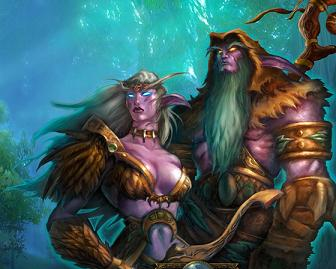
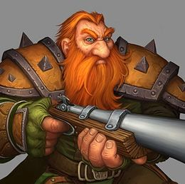
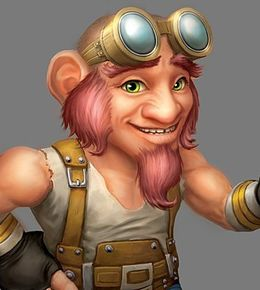
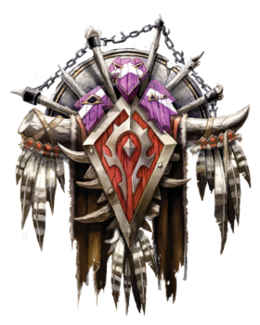
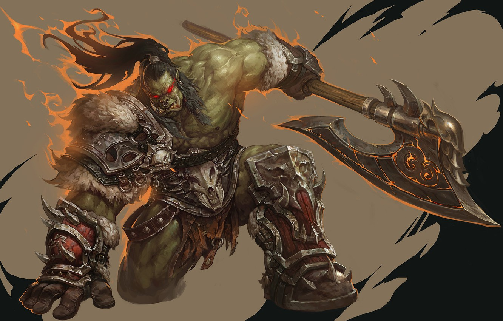
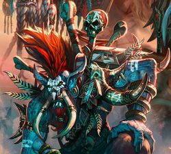
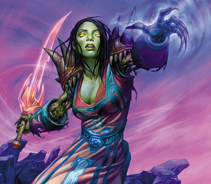
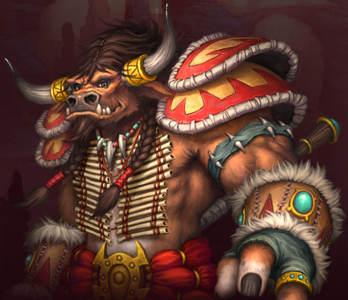

De Alliance en de Horde zijn grote rivalen van elkaar. In de originele versie van het spel bestaat elke 'faction' uit 4 rassen.

|
Ras | kenmerken |
|---|---|---|
 |
Human | Mensen zijn het jongste ras maar hebben de meeste invloed en macht op de planeet. |
|  | Night elf | Nacht elven zijn één van de oudste rassen in Azeroth. Ze leven vooral in bosgebieden |
|  | Dwarf | De Dwarven zijn iets kleiner dan de mensen maar hebben enorme kracht. Ze wonen vooral in de bergen waar ze grote structuren in bouwen. |
|  | Gnome | De gnomes zijn de kleinste van de planeet. Ze leven samen met de dwarven in de bergen. De gnomes zijn technisch zeer goed aangelegd en kunnen makkelijk met technologie om. |
|  | Ras | kenmerken |
|---|---|---|
|  | Orc | Orcen zijn woeste schepsels die alleen maar oorlog kennen. Als er ergens een vechtpartij is zouden ze maar al te graag meedoen. |
|  | troll | Trollen zijn het oudste ras op de planeet. Zij houden zich vooral bezig met donkere magie. |
|  | undead | Undead zijn de levende doden. Het zijn ooit mensen geweest die nu terug tot leven zijn gewekt. |
|  | tauren | Taurens zijn zeer begaan met de natuur. Ze maken deel uit van de Horde maar zijn geen voorstander van oorlog. |